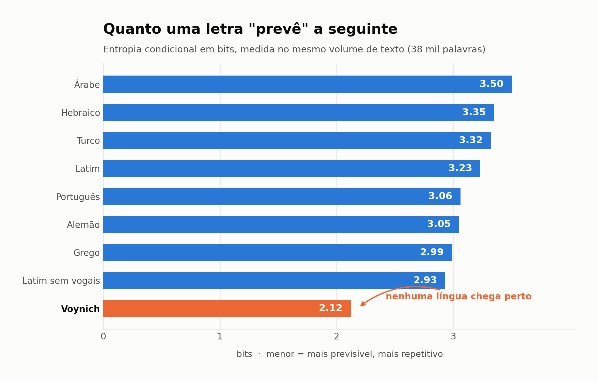
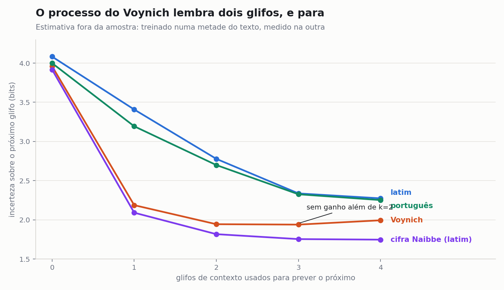
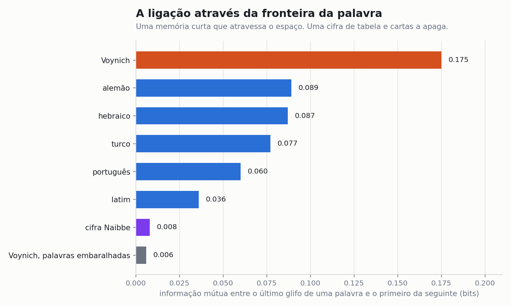
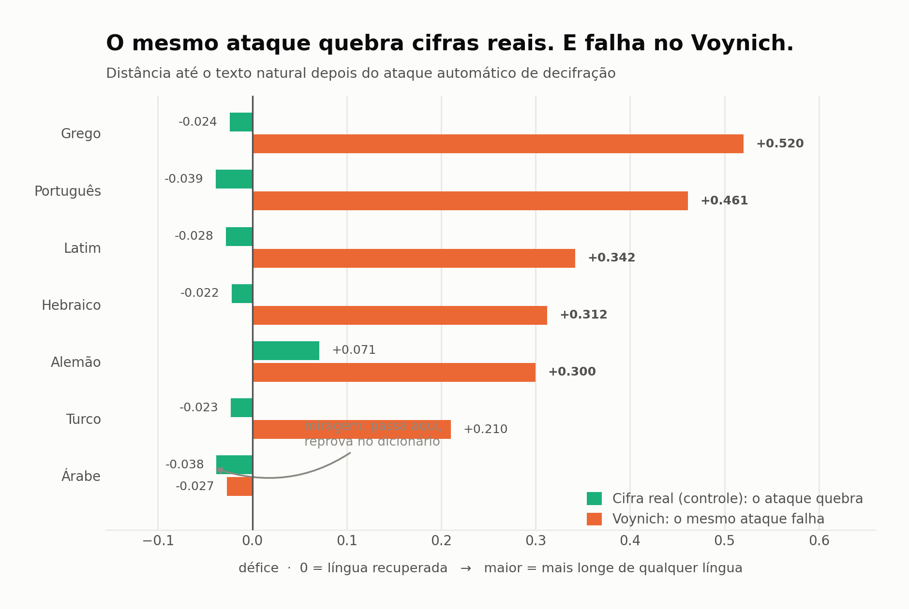

Oitenta experimentos no manuscrito Voynich
O texto do livro indecifrado mais famoso do mundo se comporta como algo escrito por hábito, não por significado: cada glifo escolhido a partir dos dois anteriores, uma palavra em cada vinte e cinco copiada da linha de cima, cada linha começando do zero. Não é uma língua, e não é uma cifra de língua que alguma das nossas ferramentas consiga ver. Uma parte do livro escapa dessa descrição: as etiquetas ao lado dos desenhos.
Em uma frase: depois de oitenta testes, o texto do Voynich é estatisticamente indistinguível de um processo com três regras, um hábito curto (cada glifo depende dos dois anteriores), cópia esporádica de uma palavra vizinha e um humor que muda de página para página; não existe dicionário além desse hábito, nenhuma página tem vocabulário próprio, e as únicas palavras que se comportam como nomes são as etiquetas coladas aos desenhos.
1. O que é o manuscrito
O manuscrito Voynich é um códice de pergaminho com cerca de 240 páginas, guardado na Biblioteca Beinecke, em Yale, escrito num alfabeto que não aparece em nenhum outro lugar, ilustrado com plantas que não correspondem a nenhuma espécie conhecida, mulheres nuas em piscinas ligadas por tubos, rodas do zodíaco e páginas de potes e raízes. A datação por carbono-14 do pergaminho (Universidade do Arizona, 2009) o coloca entre 1404 e 1438; tintas e pigmentos são compatíveis com a época (McCrone Associates, 2009). Os glifos foram montados com o repertório de um escriba latino do século XV: o sinal que fecha a maioria das palavras é a abreviatura medieval da terminação -us; o "8" é um d cursivo.

A história documentada é melhor do que a fama sugere. Em 1599 o imperador Rudolfo II comprou o livro em Praga de Karl Widemann, de Augsburgo, por 600 florins renanos, transação encontrada por Stefan Guzy nos arquivos da família Geizkofler; os "600 ducados" das versões antigas eram boato. Jacobus Horčický de Tepenec, boticário da corte, assinou o primeiro fólio (visível só sob luz ultravioleta). Em 1639 o alquimista Georg Baresch escreveu ao jesuíta Athanasius Kircher pedindo ajuda; em 1665 Johannes Marcus Marci mandou o livro a Kircher com a carta que ainda o acompanha. Ficou em bibliotecas jesuítas em Roma até 1912, quando o livreiro Wilfrid Voynich o comprou e depois inventou a história do castelo. H. P. Kraus o comprou em 1961 por 24.500 dólares, não conseguiu revender e o doou a Yale em 1969. O buraco real é de 1438 a 1599: cerca de 160 anos sem dono conhecido.

2. A regra: nada vale sem controle
Todo teste deste projeto foi feito do mesmo jeito. Primeiro em textos reais (latim, português, alemão, hebraico, grego, turco, árabe, finlandês, húngaro, basco, náuatle) e nesses textos cifrados pelo método em teste, para ver o que a medida dá quando a resposta é conhecida. Depois no manuscrito. Um número sem o seu controle não é achado; várias das "descobertas" do último século foram controles que ninguém rodou. A transliteração usada é o arquivo EVA de Zandbergen e Landini, do voynich.nu (34.119 palavras de texto de parágrafo, 7.266 distintas, 172.869 glifos, 4.111 linhas, 207 páginas), conferido contra a transliteração v101 de Glen Claston. Onde um resultado dependia de como os glifos são contados, foi recontado sob cinco segmentações alternativas, incluindo uma escolhida por um algoritmo a favor da hipótese em teste. Os valores de entropia variam cerca de um décimo conforme o trecho de corpus usado no controle; cada tabela traz o valor da sua própria rodada.
3. O que o texto é
3.1 Muito mais previsível que qualquer língua
A entropia condicional de um glifo dado o anterior é 2,12 bits. Na mesma medida, latim dá 3,23, português 3,06, alemão 3,05, grego 2,99, e hebraico, turco e árabe entre 3,3 e 3,5; a língua natural mais baixa encontrada foi o náuatle, 2,77, impossível cronologicamente para um livro europeu de 1420. Isso não é artefato da transliteração: um algoritmo autorizado a fundir glifos do jeito que mais aumenta a entropia leva o manuscrito de 2,12 a 2,81 depois de doze fusões, mas o mesmo procedimento leva o latim de 3,32 a 3,86. A distância sobrevive a qualquer leitura do alfabeto.

3.2 Vocabulário rico, nenhuma frase repetida
Entropia baixa não é repetição. O texto tem 7.266 palavras distintas em 34.119 (razão 0,213, na faixa do latim). Pares de palavras repetem o tempo todo ("s aiin" 55 vezes, "or aiin" 54). Mas só uma sequência de quatro palavras aparece duas vezes no livro inteiro, nenhuma sequência de cinco palavras se repete, e nenhuma das 4.111 linhas se repete. Latim do mesmo tamanho tem 289 sequências de cinco palavras repetidas, a mais comum catorze vezes. Todo texto real repete suas fórmulas. Este nunca repete, em nenhuma segmentação: sem os espaços, trechos de vinte glifos repetem 75 vezes contra 2.018 no latim.
3.3 Uma memória de dois glifos
Conhecer os dois glifos anteriores reduz a incerteza sobre o próximo de 3,96 para 1,94 bits. Conhecer o terceiro não muda nada (1,94). O latim continua melhorando até quatro letras de contexto, porque tem morfologia e estrutura de sílaba. O processo do Voynich não tem nenhuma das duas: é, estatisticamente, uma cadeia de segunda ordem sobre glifos, com o espaço tratado como mais um glifo.

3.4 A ligação através da fronteira da palavra, e onde ela morre
O último glifo de uma palavra e o primeiro da seguinte compartilham 0,175 bits de informação, duas a cinco vezes mais que em qualquer língua testada (latim 0,036, alemão 0,089). Pares específicos carregam isso: uma palavra terminada em y é seguida por uma que começa com q muito mais que o acaso, e quase nunca por uma que começa com a. A ligação resiste aos 8% de espaços que os transliteradores marcaram como incertos (0,146 a 0,168 sob tratamentos alternativos) e desaparece por completo na quebra de linha (0,232 dentro da linha, 0,048 através dela, contra um piso de ruído de 0,035). No latim a quebra de linha é invisível. No manuscrito toda linha começa do nada.

3.5 Nenhum dicionário acima do hábito
Este é o teste decisivo contra o melhor argumento acadêmico a favor de significado. Lindemann e Bowern (Yale) mostraram que as estatísticas de palavra do manuscrito, a razão de palavras distintas, a fatia das mais comuns, caem dentro da faixa das línguas naturais, e leram isso como evidência de conteúdo. Treinamos uma cadeia de três glifos em cada corpus e comparamos as estatísticas de palavra do texto gerado com as do real.
| corpus | distintas / total, real | cadeia | tipos após 34 mil, real | cadeia | palavras geradas que existem no texto real |
|---|---|---|---|---|---|
| Voynich | 0,213 | 0,217 | 7.250 | 7.371 | 85% |
| latim | 0,205 | 0,356 | 6.975 | 12.122 | 53% |
| português | 0,116 | 0,208 | 3.969 | 7.094 | 72% |
No latim e no português, uma cadeia de letras erra as estatísticas de palavra: inventa metade das palavras e dobra o vocabulário, porque uma língua tem um léxico, e o léxico é informação que hábitos de três letras não contêm. No manuscrito, a cadeia de glifos acerta todas as estatísticas de palavra, e 85% do que ela inventa já está no livro. Não há léxico acima do hábito. As estatísticas de palavra não podem ser evidência de significado aqui, porque um processo sem memória além de três glifos as produz.
A mesma ausência aparece no nível da gramática. Dada a palavra anterior, o melhor chute para a seguinte acerta 2,2% das vezes (12,0% no português, 9,3% no latim). A ordem das palavras quase não carrega nada.
4. O que não é
4.1 Cifras que nossos ataques quebram, e que falham aqui
Um solucionador por subida de encosta com pontuação de trigramas recupera 92 a 100% de um texto cifrado por substituição simples em latim, hebraico, grego, alemão, turco, árabe ou português. Apontado para o manuscrito com cada uma dessas línguas como texto claro suposto, converge para nada: défices de verossimilhança de 0,21 a 0,52 por glifo em relação aos controles. O árabe parecia exceção até dois controles negativos serem rodados: o solucionador também "lê" um Voynich embaralhado como árabe, e as palavras que ele produz são árabe de verdade 20% das vezes, contra 60 a 90% nos controles. Uma miragem.

Também eliminados, cada um com seu controle: substituição polialfabética; escrita abjad (sem vogais); sistemas de abreviatura de escriba; grade de Cardano (55 geometrias e sete candidatas realistas; as posições sobreviventes são estatisticamente indistinguíveis das mascaradas); glifos nulos; tabelas silábicas; anagramas ordenados; lista de palavras ordenada; tabela numérica; transposição por colunas; inversão; palavra como letra; palavra como sílaba; língua taxonômica a priori de Friedman; esteganografia em tamanhos de palavra, tamanhos de linha ou iniciais.
4.2 A retratação honesta
A primeira versão deste trabalho apresentou a entropia baixa e a ausência de frases repetidas como prova de que não existe mensagem. Estava errado. Em dezembro de 2025 Michael Greshko publicou na Cryptologia a cifra Naibbe, uma substituição homofônica verbosa que pode ser feita à mão com material do século XV: o texto claro é reespaçado em pedaços de uma e duas letras, cada pedaço substituído por uma cadeia de glifos tirada de uma de seis tabelas escolhidas com cartas de baralho. Pegamos a implementação publicada por ele e ciframos latim de verdade:
| medida | Voynich | Naibbe (latim) | latim cru |
|---|---|---|---|
| entropia dado o glifo anterior | 2,119 | 2,061 | 3,322 |
| sequências de 4 palavras repetidas | 1 | 5 | 615 |
| sequências de 5 palavras repetidas | 0 | 0 | 289 |
| palavra igual à anterior | 281 | 100 | 12 |
| vizinhas a um glifo de distância | 4,5% | 1,5% | 0,3% |
| memória da linha de cima (excesso) | +0,019 | −0,007 | 0,000 |
| ligação de fronteira (bits) | 0,175 | 0,008 | 0,036 |
Um texto latino real, cifrado por um método viável em 1420, reproduz a entropia e a ausência de repetições. Esses dois números, portanto, não provam nada sobre significado. O que a cifra não reproduz é a auto-similaridade local: o manuscrito copia. Palavras quase idênticas à anterior aparecem três vezes mais, e uma palavra tem uma quase-cópia na linha imediatamente acima em 24,9% das vezes contra 23,0% para linhas mais distantes (intervalo por bootstrap de +1,5 a +2,4 pontos; latim plano; português com decaimento suave por tema e sem pico na linha de cima). O efeito aparece em todas as seções e nos dois "idiomas" de Currier. A cifra também não tem ligação de fronteira nenhuma, porque o sorteio da carta apaga a memória entre palavras. Dar à cifra uma regra que amarra a próxima tabela ao último glifo devolve a ligação, mas traz de volta as frases repetidas e mata a variedade: nessa família inteira as duas propriedades são antagônicas, e nenhum ajuste alcança a combinação do manuscrito.
5. Um modelo com três regras
Como o processo tem memória de dois glifos, o modelo nulo óbvio é uma cadeia de glifos de ordem dois ou três, treinada no próprio texto com o espaço como símbolo. Ela foi então pontuada em dez medidas, nenhuma das quais foi ajustada, exceto a primeira.
| medida | Voynich | cadeia ordem 3 | cadeia + 4% de cópia local |
|---|---|---|---|
| entropia dado o glifo anterior | 2,12 | 2,12 | 2,16 |
| palavras distintas / total | 0,213 | 0,219 | 0,224 |
| fatia das 20 palavras mais comuns | 20,3% | 21,2% | 20,9% |
| sequências de 4 palavras repetidas | 1 | 1 | 0 |
| ligação de fronteira (bits) | 0,175 | 0,174 | 0,150 |
| previsibilidade do espaço | 77,6% | 75,6% | 75,4% |
| palavra igual à anterior | 281 | 129 | 399 |
| vizinhas a um glifo de distância | 4,5% | 2,4% | 4,2% |
| memória da linha de cima | +0,019 | 0,000 | +0,024 |
A cadeia sozinha reproduz a entropia, o vocabulário, a concentração, a ausência de repetições longas, a ligação de fronteira e o espaço. O que ela erra são exatamente os três sinais de cópia, e 4% de palavras copiadas da anterior ou da linha de cima, com um glifo trocado, os fornecem. Fora da amostra, o modelo também acerta a distribuição de tamanhos de palavra (0,018 bits de divergência; latim 0,27), o crescimento do vocabulário (3.179 tipos após 10 mil palavras contra 3.256), a inclinação de Zipf (−1,05 contra −1,04) e a cobertura das palavras mais comuns.
5.1 A terceira regra: cada página tem um humor
O modelo falhou num teste fora da amostra. O manuscrito tem correlações de longo alcance do tipo encontrado em textos naturais (expoente de flutuação 0,66 a 0,68; latim 0,61, português 0,58; uma cadeia sem memória 0,49). Embaralhar as palavras dentro de cada página não muda o expoente (0,683); embaralhar as linhas não muda (0,678); embaralhar a ordem das páginas não muda (0,715). A correlação mora inteiramente no nível da página: cada página tem sua própria mistura, e nem a ordem dentro dela nem a ordem entre elas importa. Copiar de qualquer lugar da página não cria isso. Um viés nas preferências de glifo específico da página, constante enquanto a página dura, cria: com um viés moderado o expoente sobe para 0,60 a 0,68 enquanto o resto da bateria se mantém.
Esse efeito de página é conteúdo? Um herbário nomeia a planta na página da planta. Contamos palavras que aparecem três ou mais vezes numa página e em nenhuma outra do livro: latim cortado nas mesmas páginas dá 0,20 por página, português 0,10, o manuscrito 0,00. Nenhuma palavra em 207 páginas. O efeito de página está espalhado por todos os hábitos, não concentrado em palavra nenhuma. É a mão mudando de humor entre páginas, não a página mudando de assunto.
5.2 A receita
Quantas regras geram o livro? Uma tabela de ordem dois cobrindo 95% do texto tem 1.228 entradas para o manuscrito e 2.246 para o latim. Sessenta e três blocos de construção cobrem 95% do texto (o latim precisa de 67, mas usa 3,3 por palavra onde o manuscrito usa 2,2). As palavras têm um bloco (26%), dois (45%) ou três (20%), sempre na mesma ordem: uma abertura (qok, qot, ok, ot, ch, sh, che), um meio opcional (ee, e, o, d, s), um fechamento (aiin, ain, edy, y, ar, or, al, dy, am). Alguns blocos são palavras inteiras e são as palavras mais comuns do livro: daiin (767 vezes sozinha), ol, chedy, aiin, shedy. As regras que um escriba precisaria: q só abre palavra e sempre leva o (97,7%, quebrada 121 vezes em 5.336); n e m só fecham (97,7%, 95,4%); escolha o próximo bloco a partir dos dois últimos glifos; em cada ponto há uma opção favorita (58% em média) e duas ou três alternativas; esqueça a linha anterior ao começar uma nova; a cada vinte e cinco palavras, copie uma vizinha trocando um glifo. A forma dessas escolhas, uma favorita ganhando 58% das vezes, é a mesma da saída de um baralho com pesos, e diferente do latim (42%). Tabela com pesos ou hábito internalizado; a estatística não separa os dois.

6. A oficina
Lisa Fagin Davis identificou cinco mãos em 2020 pela forma das letras. O texto confirma e refina. Um modelo da estrutura de palavra de uma mão aplicado ao texto de outra custa 0,31 bit por glifo; entre línguas custa 2,40; entre capítulos de um mesmo livro em português, 0,22. Cinco pessoas, um sistema, sotaques pessoais. Os sotaques seguem a mão mais que o assunto: só dentro do herbário, a mão 1 é separável em 77 de 78 páginas enquanto as mãos 2, 3 e 5 se confundem, e os saltos estatísticos entre páginas consecutivas coincidem com as trocas de mão de Davis (divergência 0,237 contra 0,104 dentro da mesma mão, permutação p < 0,0003). A versão do sistema da mão 1 não tem as peças com "ed" (0,0% das palavras); as outras as usam em 13 a 21%. Duas versões de um método, que Currier chamou de idiomas A e B em 1976. Davis mostrou também que as mãos 1 e 2 alternam por bifólio, a folha dobrada, não por página: cada escriba pegava uma folha. Dentro de um escriba e de uma seção não há deriva do começo ao fim: nem aprendizado, nem cansaço, seis indicadores planos.
Os desenhos vieram antes. Palavras encostadas num desenho mudam de forma: antes dele são mais curtas (4,2 glifos contra 5,0) e três vezes mais propensas a começar com d; depois dele, as iniciais em q caem de 17% para 4% e as letras altas quase somem (permutação p < 0,001). O imageamento multiespectral de Yale, publicado por Davis em 2024, encontrou no fólio 93r o texto passando por cima de uma mancha de pigmento derramado: desenho e pintura antes da escrita. O texto foi encaixado no espaço que sobrou. E nenhum dispositivo girou em compasso: as escolhas não mostram periodicidade em nenhum passo de 2 a 80 palavras, e os intervalos entre usos do mesmo bloco são mais irregulares que o acaso (coeficiente de variação 1,2 a 1,5 contra 0,95), não regulares.
7. A exceção: as etiquetas

1.119 palavras ficam ao lado de objetos desenhados: estrelas, ninfas, partes de plantas, potes, os gomos dos diagramas circulares. Elas se comportam de modo diferente do texto corrido em todos os quesitos. São mais únicas (74% distintas contra 56% numa amostra do mesmo tamanho, z = 13,9; as 40 etiquetas dos diagramas circulares são 40 palavras diferentes), mais longas (5,6 a 6,8 glifos contra 5,1), e carregam um marcador: 61% das etiquetas do zodíaco e 39 a 45% das outras começam com o seguido de uma letra alta, contra 12% das palavras do texto, uma convenção compartilhada por todas as mãos. Só 5,5% delas reaparecem no texto da própria página; num herbário real, o nome do pote é o que o parágrafo repete. Metade das etiquetas de plantas nunca ocorre em lugar nenhum do texto corrido (79% seria o esperado para palavras comuns dos mesmos tamanhos), e as ausentes são construções menos regulares que o hábito do texto produz. As etiquetas do zodíaco não codificam posição: a etiqueta da posição 7 de Áries não é mais parecida com a da posição 7 de Touro do que um par aleatório (distância de edição 0,716 contra 0,723; um par idêntico em 833). E não são nomes latinos nem italianos em substituição simples: um solucionador que recupera 99,9% de uma lista de controle de palavras latinas cifradas chega a 12,6% nas etiquetas, abaixo dos 14,9% que alcança em palavras sem sentido.
O que sobra: uma lista à parte, quase todo item único, escrita no mesmo alfabeto com um marcador de classe e regras mais frouxas. É assim que uma lista de nomes se comporta. É assim também que uma segunda técnica, só para etiquetas, se comportaria. O que dá para excluir é que sejam apenas mais palavras do mesmo gerador.
8. O que ficou em aberto
Uma cifra da classe Naibbe. Se o texto for uma cifra homofônica verbosa desse tipo, a mensagem poderia ter cerca de 9 mil palavras de latim e seria invisível a todas as estatísticas acima, por construção. Construímos o ataque que um criptoanalista faria: sem a chave, a estrutura da cifra pode ser aprendida do próprio texto cifrado (110 de 137 fichas de uma letra, 88% das divisões em duas letras e 111 de 138 prefixos recuperados no controle do próprio Greshko). Atribuir letras aos 462 símbolos resultantes é onde para: três solucionadores (recozimento simulado, agrupamento por contexto e um modelo oculto de Markov com maximização de expectativa, à maneira de Knight) chegam a 15%, 3% e 24% de acerto por letra no controle, contra 8% do acaso e 90% necessários para ler. A informação está lá (a chave verdadeira pontua muito melhor que qualquer solução encontrada); a busca é o obstáculo, como foi para o Zodíaco 340 com só 63 símbolos. Apontadas para o manuscrito, as mesmas ferramentas ajustam latim e italiano tão mal quanto ajustam um texto gerado pela cadeia. Isso é compatível com "não é uma cifra latina desse tipo", mas como o controle não foi quebrado, nenhuma conclusão é reivindicada. em aberto
O anel do fólio 57v. O único lugar onde glifos aparecem listados em sequência em vez de montados em palavras: dezessete sinais repetidos quatro vezes ao redor de um círculo. Oito deles praticamente não existem no texto (v ocorre uma vez, x 22 vezes, quatro sinais nunca), e seis dos doze glifos mais comuns do texto não estão no anel. Seja o que for, não é o alfabeto em que o texto foi escrito. fechado
Paralelos. Nada mais combina códice ilustrado, escrita inventada, 170 mil glifos de texto fluente sem repetições e uma oficina de cinco escribas. Cada ingrediente tem parentes: as tabelas geradas por procedimento do Livro de Soyga (cuja regra Jim Reeds recuperou em 1998) e as tabelas de palavras de Tritêmio (1499, 1518); as inscrições pseudo-cúficas e pseudo-hebraicas que os pintores italianos usavam nas mesmas décadas para evocar escrita sagrada; a glossolalia, fluente e estruturada foneticamente e sem léxico nem gramática; o Codex Seraphinianus de Serafini (1981), enciclopédia assumidamente asêmica; e o Códice de Rohonc, o irmão mais próximo como objeto, cujo texto, ao contrário, é repetitivo e foi proposto como código de textos cristãos. O método de tabela e grade de Gordon Rugg (2004) e o modelo de autocitação de Torsten Timm (2019) são os dois mecanismos publicados que este trabalho quantifica.
9. Reproduza
Está tudo no repositório: os scripts dos experimentos (experiments/exp49.py a exp80e.py, mais o código anterior de ataques e entropia), os resultados numéricos em JSON, as figuras e um script para baixar os dados. A transliteração vem do voynich.nu (EVA de Zandbergen e Landini e v101 de Glen Claston, usadas com atribuição); os corpora de comparação do bible-corpus de christos-c e do Projeto Gutenberg; a implementação Naibbe do repositório de Michael Greshko; os scans do Internet Archive. Python 3.11 com numpy, scipy, matplotlib, opencv e pandas basta. A maioria dos experimentos roda em segundos; os solucionadores do experimento 80 levam minutos cada.
git clone https://github.com/<usuario>/voynich-experiments cd voynich-experiments pip install -r requirements.txt bash scripts/fetch_data.sh cd experiments && python3 exp65.py # comprimento de memoria, ~1 min
Se encontrar um erro, abra uma issue com o número do experimento. Se construir um solucionador que quebre o controle Naibbe, o manuscrito está esperando.
10. Fontes
- René Zandbergen, site The Voynich Manuscript e transliterações: voynich.nu.
- Lisa Fagin Davis, "How Many Glyphs and How Many Scribes? Digital Paleography and the Voynich Manuscript", Manuscript Studies 5.1 (2020); "Multispectral Imaging and the Voynich Manuscript", Manuscript Road Trip, 2024.
- Michael A. Greshko, "The Naibbe cipher: a substitution cipher that encrypts Latin and Italian as Voynich Manuscript-like ciphertext", Cryptologia (2025), doi:10.1080/01611194.2025.2566408; código em github.com/greshko/naibbe-cipher.
- Christophe Parisel, "Evidence of Layered Positional and Directional Constraints in the Voynich Manuscript" (arXiv:2604.19762, 2026) e "A Quantitative Confirmation of the Currier Language Distinction" (arXiv:2604.25979, 2026).
- Claire Bowern e Luke Lindemann, "The Linguistics of the Voynich Manuscript", Annual Review of Linguistics 7 (2021); Luke Lindemann, "Crux of the MATTR: Voynichese Morphological Complexity" (CEUR-WS 3313).
- Torsten Timm e Andreas Schinner, "A possible generating algorithm of the Voynich manuscript", Cryptologia 44 (2020); Gordon Rugg, "An elegant hoax? A possible solution to the Voynich manuscript", Cryptologia 28 (2004); Prescott Currier, textos de 1976 no voynich.nu.
- Marcelo Montemurro e Damián Zanette, "Keywords and co-occurrence patterns in the Voynich manuscript", PLoS ONE 8 (2013).
- Jim Reeds, "John Dee and the Magic Tables in the Book of Soyga" (escrito em 1998, publicado em 2006); Levente Zoltán Király e Gábor Tokai, "Cracking the code of the Rohonc Codex", Cryptologia 42 (2018).
- Scans: Internet Archive, domínio público; imagens em alta resolução na Biblioteca Beinecke, Yale.